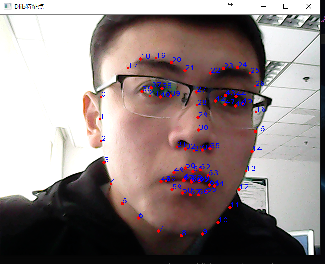

DLIB FOR Face Recognition
Dlib是一个现代化的C ++工具箱，其中包含用于在C ++中创建复杂软件以解决实际问题的机器学习算法和工具。它广泛应用于工业界和学术界，包括机器人，嵌入式设备，移动电话和大型高性能计算环境。Dlib的开源许可证 允许您在任何应用程序中免费使用它。

// 鼻尖 30
// 鼻根 27
// 下巴 8
// 左眼外角 36
// 左眼内角 39
// 右眼外角 45
// 右眼内角 42
// 嘴中心 66
// 嘴左角 48
// 嘴右角 54
// 左脸最外 0
// 右脸最外 16
face_recognition
本项目是世界上最简洁的人脸识别库，你可以使用Python和命令行工具提取、识别、操作人脸。
本项目的人脸识别是基于业内领先的C++开源库 dlib中的深度学习模型，用Labeled Faces in the Wild人脸数据集进行测试，有高达99.38%的准确率。但对小孩和亚洲人脸的识别准确率尚待提升。
KNN人脸识别
K-近邻算法（或近邻的简称）是一种用于分类和回归的非参数方法：
计算一个点A与其他所有点之间的距离，取出与该点最近的k个点，然后统计这k个点里面所属分类比例最大的，则点A属于该分类